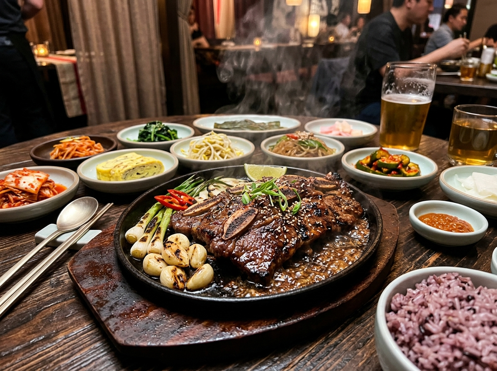

1. 16-Hour Marrow Reduction
Boiling dense pork bones with ginger root and leeks until the broth emulsifies naturally into a luscious, opaque, collagen-rich ramen soup base.
Authentic Japanese tonkotsu ramen is an art of patience and heat. At Pokebowl Ramen, our soup master maintains a rolling boil of pork marrow bones for sixteen continuous hours, breaking down collagen into an intensely rich, creamy white broth layered with aromatic garlic and ginger oils.

Boiling dense pork bones with ginger root and leeks until the broth emulsifies naturally into a luscious, opaque, collagen-rich ramen soup base.
Simmering premium pork belly in sweet sake, mirin, and dark soy for hours, then torch-searing each slice to render the fat and caramelize the edges.
Using custom wheat noodles with exact hydration levels to deliver that perfect al dente chew (katame) that clings to every spoonful of soup.